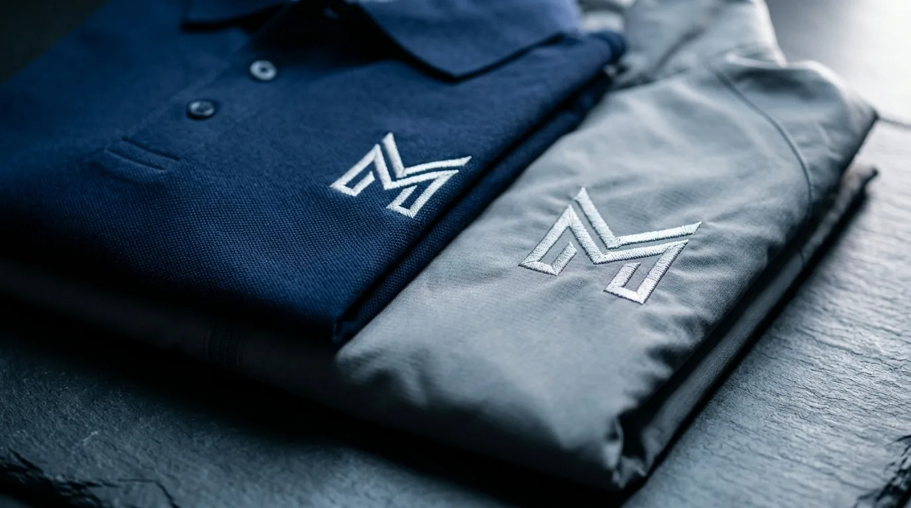

Perusahaan yang ingin menjaga hubungan baik dengan tim internal umumnya membutuhkan produk yang relevan dengan aktivitas kerja sehari-hari, bukan sekadar suvenir formalitas.
Pemilihan merchandise karyawan yang tepat berdampak pada persepsi karyawan terhadap perhatian perusahaan, terutama pada momen penting seperti pencapaian target, perayaan anniversary perusahaan, atau penyambutan karyawan baru.
Tumbler dan Botol Minum untuk Apresiasi Harian
Tumbler custom logo menjadi pilihan paling sering dipesan karena dipakai setiap hari dan menjaga eksposur brand perusahaan secara konsisten.
Produk ini tersedia dalam bahan stainless steel dengan pilihan kapasitas dan warna sesuai identitas korporat. Selain fungsi praktis, tumbler juga menjadi media branding yang berjalan mengikuti karyawan ke mana pun mereka beraktivitas, baik di dalam maupun di luar kantor.
Merchandise Kantor menyediakan opsi cetak logo dengan teknik laser maupun sablon digital, disesuaikan dengan material dan volume pesanan.
Beberapa varian yang tersedia untuk kebutuhan apresiasi harian:
- Tumbler stainless double wall dengan insulasi panas dan dingin
- Botol minum sport dengan pegangan praktis untuk aktivitas outdoor kantor
- Tumbler set dengan kemasan box eksklusif untuk hadiah individu
Tas dan Goodie Bag untuk Employee Event
Tas kanvas dan goodie bag digunakan sebagai kelengkapan acara internal seperti town hall, family gathering, atau seminar tahunan. Produk ini memudahkan distribusi kit acara sekaligus berfungsi sebagai merchandise yang dapat dipakai ulang oleh karyawan.
Pemilihan bahan tas disesuaikan dengan durasi pemakaian dan tema acara. Tas kanvas cocok untuk acara formal atau semi formal, sementara tas serut atau totebag lebih sesuai untuk acara santai seperti outing tim.
Pilihan tas yang umum dipesan perusahaan meliputi:
- Totebag kanvas dengan cetak logo satu warna atau full color
- Tas ransel ringan untuk kebutuhan perjalanan dinas atau outing
- Goodie bag serut untuk kit acara dan pembagian doorprize
Paket Seragam dan Apparel untuk Identitas Tim
Paket apparel seperti kaos, polo shirt, dan jaket digunakan perusahaan untuk memperkuat identitas visual tim pada acara resmi maupun kegiatan luar kantor. Produk ini juga sering dijadikan merchandise apresiasi tahunan yang menandai pencapaian bersama.

Konsistensi warna dan penempatan logo pada apparel memengaruhi kesan profesional saat digunakan dalam dokumentasi acara perusahaan. Merchandise Kantor menyesuaikan ukuran, bahan, dan teknik sablon sesuai kebutuhan volume pemesanan tim.
Kategori apparel yang tersedia antara lain:
- Polo shirt dengan bordir logo untuk kesan formal
- Kaos event dengan desain custom sesuai tema acara
- Jaket atau vest ringan untuk kegiatan outdoor perusahaan
Alat Tulis dan Aksesoris Meja Kerja
Produk alat tulis seperti notebook, pulpen, dan organizer meja menjadi merchandise yang relevan untuk kebutuhan kerja harian karyawan, terutama pada momen onboarding atau apresiasi rutin. Produk ini menawarkan biaya per unit yang lebih terjangkau untuk pemesanan skala besar.
Kombinasi alat tulis dengan kemasan set memberikan kesan lebih rapi saat dibagikan pada acara formal seperti pelatihan internal atau rapat kerja tahunan.
Beberapa produk aksesoris meja yang sering dipesan:
- Notebook custom cover dengan logo timbul atau cetak digital
- Pulpen metal dengan ukiran nama perusahaan
- Organizer meja multifungsi untuk alat tulis dan gadget
Merchandise Berdasarkan Jenis Kebutuhan Kantor
Setiap jenis kebutuhan kantor memiliki karakteristik merchandise yang berbeda, mulai dari apresiasi kinerja individu hingga kegiatan gathering skala besar. Pemilihan produk sebaiknya disesuaikan dengan tujuan acara agar anggaran digunakan secara efektif.
Referensi penyesuaian merchandise berdasarkan kebutuhan:
- Apresiasi kinerja individu: tumbler premium, alat tulis eksklusif, atau paket hadiah kombinasi
- Employee gathering: kaos event, totebag, dan aksesoris acara dalam jumlah besar (lihat merchandise employee gathering)
- Onboarding karyawan baru: starter kit berisi notebook, pulpen, dan tumbler dengan identitas perusahaan (lihat merchandise onboarding karyawan baru)
- Anniversary perusahaan: paket apparel dan tumbler edisi khusus dengan desain tematik
Untuk pembahasan lebih detail per kebutuhan, Merchandise Kantor menyediakan referensi lanjutan pada artikel employee merchandise untuk karyawan perusahaan, merchandise onboarding untuk karyawan baru, dan merchandise employee gathering untuk karyawan.
Cara Memesan Merchandise Karyawan dalam Jumlah Besar
Proses pemesanan merchandise karyawan dalam jumlah besar umumnya melibatkan konsultasi kebutuhan, penentuan desain, produksi sampel, lalu produksi massal sesuai timeline acara perusahaan. Estimasi waktu produksi bervariasi tergantung jenis produk dan kompleksitas custom logo.
Tim procurement disarankan menyiapkan detail kebutuhan sejak awal, termasuk jumlah unit, warna korporat, dan tenggat waktu acara, agar proses produksi berjalan sesuai target pengiriman.
"Merchandise karyawan yang fungsional dan berkualitas tinggi merupakan investasi terbaik perusahaan dalam mengapresiasi loyalitas dan kinerja tim."
— Erlang Sinatrya, Penulis Merchandise Kantor

Pesan Merchandise Karyawan di Merchandise Kantor
Merchandise Kantor siap membantu perusahaan Anda menyiapkan merchandise karyawan untuk apresiasi, onboarding, hingga employee event dengan opsi custom logo dan estimasi produksi yang jelas. Hubungi tim Merchandise Kantor sekarang untuk konsultasi kebutuhan merchandise dan dapatkan penawaran sesuai skala pemesanan perusahaan Anda.